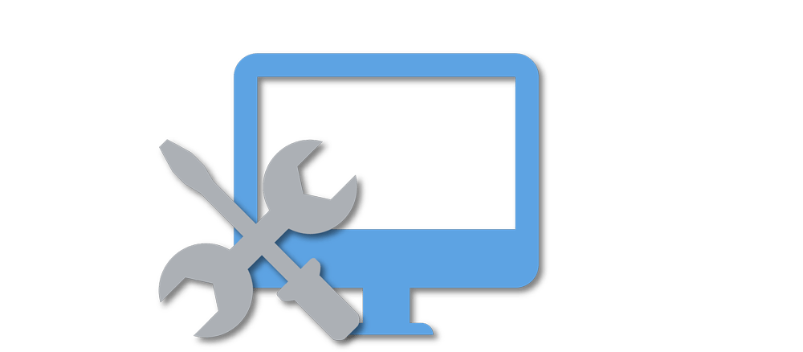

Maintenance Tracker App is an application that provides information about maintenance works within the company for clear follow up.
With the growing number of employees it had become difficult to track and follow up on maintenance operations which greatly affected technical performance.
This App is meant to solve that problem by providing Users with the ability to reach out to operations or repairs department regarding repairs/maintenance and monitor the status of their request. Thus making the company more efficient.